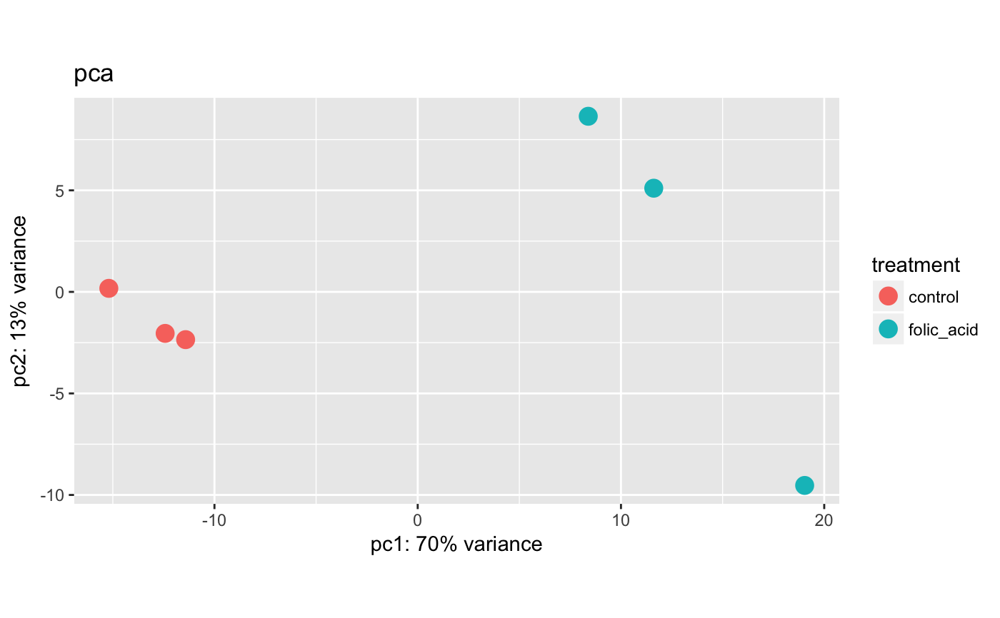
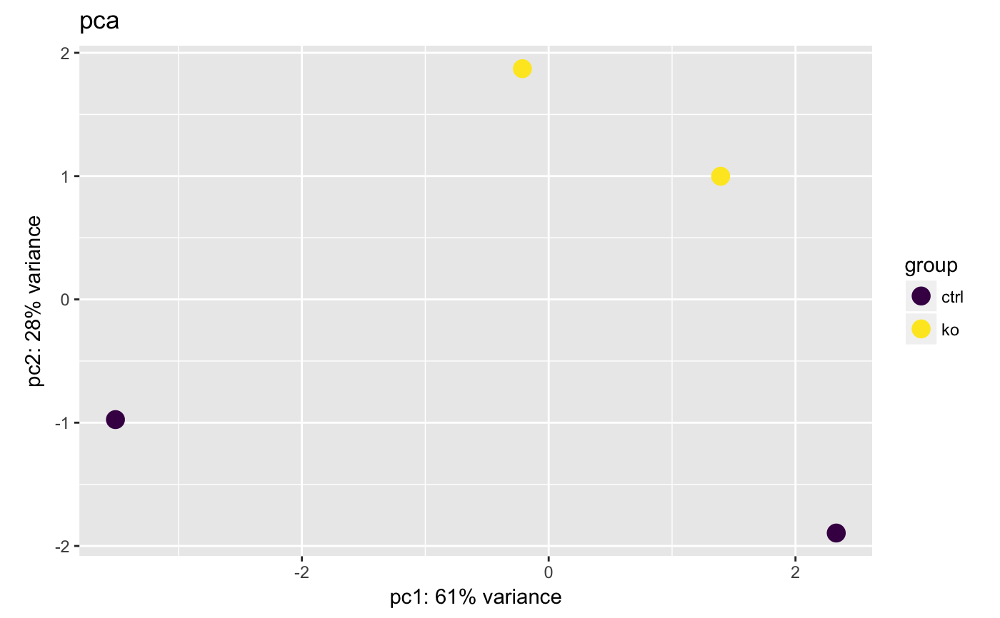

Principal component analysis plot
plotPCA(object, ...) # S4 method for bcbioRNASeq plotPCA(object, normalized = c("vst", "rlog"), ...)
| object | Object. |
|---|---|
| normalized |
tximport caller-specific normalizations:
Additional gene-level-specific normalizations:
|
| ... | Passthrough to |
ggplot or DataFrame.
Updated 2019-09-15.
PCA (Jolliffe, et al., 2002) is a multivariate technique that allows us to summarize the systematic patterns of variations in the data. PCA takes the expression levels for genes and transforms it in principal component space, reducing each sample into one point. Thereby, we can separate samples by expression variation, and identify potential sample outliers. The PCA plot is a way to look at how samples are clustering.
Jolliffe, et al., 2002.
We're using a modified version of the DESeqTransform method here.
methodFunction( f = "plotPCA", signature = "DESeqTransform", package = "DESeq2" )
#>plotPCA(bcb, label = TRUE)#> ℹ Using `vst` counts.